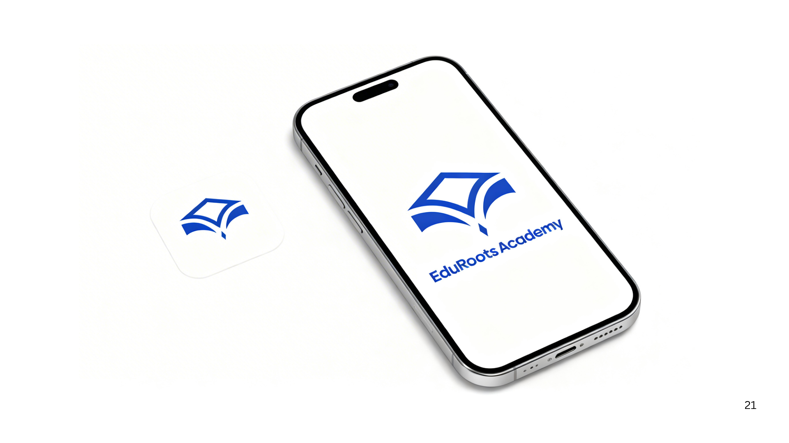
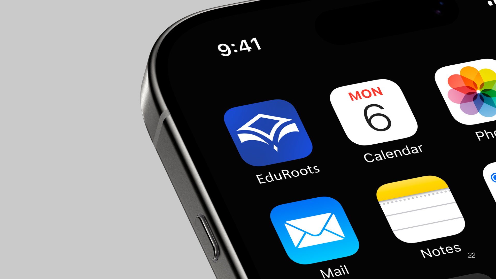
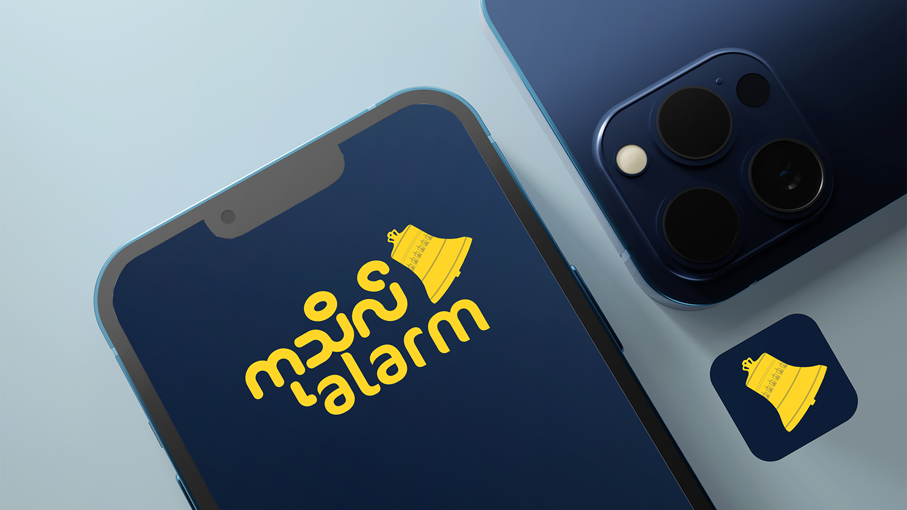
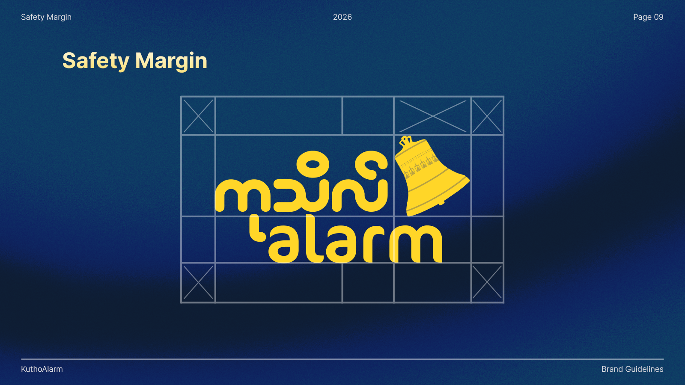
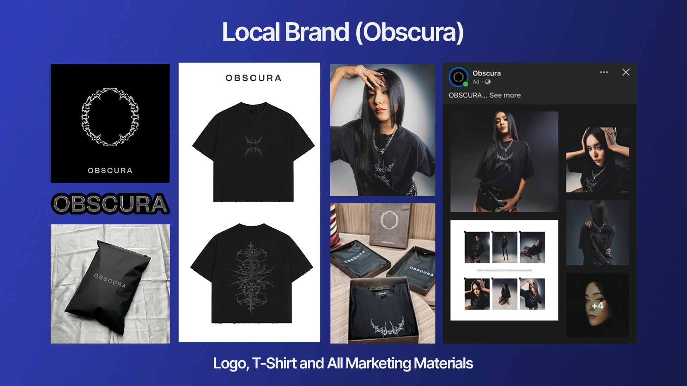
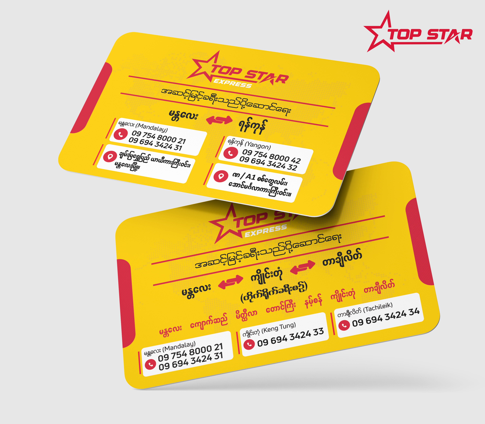
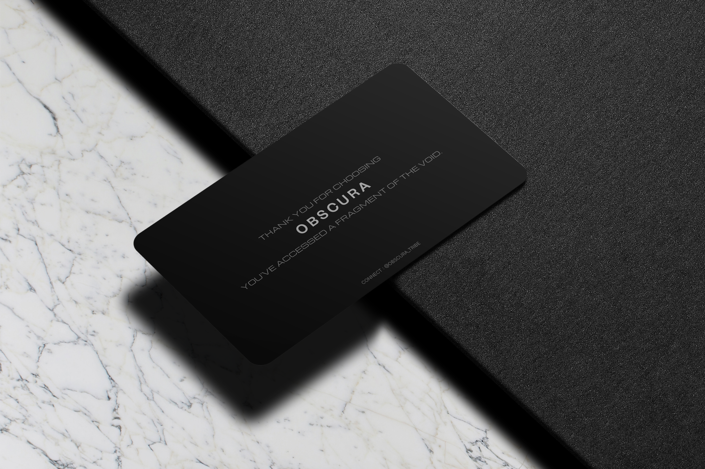
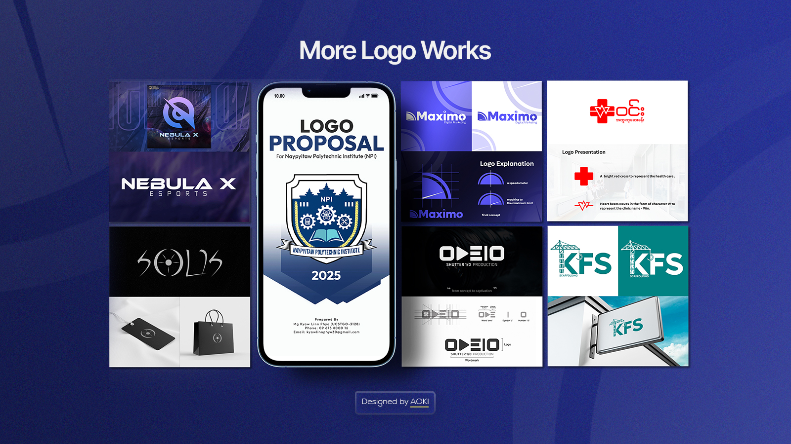

Branding Projects — Logo Work
Brand တစ်ခုရဲ့ Theme နဲ့ Meaning ကို ထင်ရှားစွာဖော်ပြနိုင်မယ့် Logo Design တွေဆိုတာ Design Decision သာမက Brand Color, Typography နဲ့ Brand Elements တွေကို သေချာစဉ်းစားဆုံးဖြတ်ပြီး ဖန်တီးရတာဖြစ်ပါတယ်။ ဒီ article မှာတော့ ကျွန်တော်ဖန်တီးထားတဲ့ Logo Design တွေထဲက အချို့ကို ဖော်ပြထားပါတယ်ခင်ဗျာ။
Project Type
Logo Design
Role
Graphic Designer
Focus
Branding
Tools
Photoshop, Illustrator

Project အကြောင်း
Logo ဟာ Brand တစ်ခုရဲ့ ပထမဆုံးမြင်တွေ့ရတဲ့ Visual Element တစ်ခုဖြစ်တဲ့အတွက် လှပရုံသာမက Brand ရဲ့ Personality၊ Message နဲ့ Target Audience ကိုပါ ထင်ရှားစွာဖော်ပြနိုင်ဖို့ အရေးကြီးပါတယ်။
ဒီ Logo Design Projects တွေမှာ Brand တစ်ခုချင်းစီရဲ့ အဓိကအကြောင်းအရာနဲ့ Character ကို နားလည်ပြီး သင့်တော်တဲ့ Concept၊ Typography၊ Shape နဲ့ Colour တွေကို ရွေးချယ်အသုံးပြုထားပါတယ်။
"Logo တစ်ခုက လှပဖို့ထက် Brand ကို မှတ်မိစေဖို့နဲ့ ကိုယ်ပိုင်ဟန်ရှိစေဖို့ ပိုအရေးကြီးပါတယ်။"
Design Approach
Logo Design တစ်ခုကို စတင်တဲ့အခါ Client ရဲ့ လိုအပ်ချက်၊ Brand ရဲ့ ရည်ရွယ်ချက်နဲ့ Audience ကို အရင်ဆုံးလေ့လာပါတယ်။ အဲဒီအချက်တွေကို အခြေခံပြီး Concept အမျိုးမျိုးကို စဉ်းစားကာ Brand နဲ့ အကိုက်ညီဆုံး Visual Direction ကို ရွေးချယ်ရတာဖြစ်ပါတယ်။
Concept & Research
Brand တစ်ခုရဲ့ အဓိကအကြောင်းအရာ၊ လုပ်ငန်းအမျိုးအစားနဲ့ ပြိုင်ဘက် Brand တွေကို လေ့လာပြီး Logo ရဲ့ Visual Direction ကို သတ်မှတ်ပါတယ်။ Simple ဖြစ်ပေမယ့် မှတ်မိလွယ်ပြီး အသုံးချရလွယ်ကူတဲ့ Concept ကို ဦးစားပေးဖို့လည်းအရေးကြီးပါတယ်။
Typography & Shapes
Typography နဲ့ Shape တွေဟာ Logo ရဲ့ Personality ကို အများကြီး သက်ရောက်စေတဲ့အတွက် Brand ရဲ့ Character နဲ့ကိုက်ညီတဲ့ Typeface နဲ့ Font တွေကို သေချာရွေးချယ်ပါတယ်။ လိုအပ်တဲ့နေရာမှာ Custom Lettering နဲ့ Shape Modification တွေကိုလည်း အသုံးပြုထားပါတယ်။
Color & Visual Direction
Color ကို Brand ရဲ့ Personality နဲ့ Message ကို ပိုမိုထင်ရှားစေဖို့ အသုံးပြုပါတယ်။ Logo ကို Color Version တင်မကဘဲ Black & White နဲ့ အရွယ်အစားအမျိုးမျိုးမှာပါ ရှင်းလင်းစွာအသုံးပြုနိုင်အောင် ဖန်တီးဖို့လည်းလိုအပ်ပါတယ်။
Selected Work
Logo Collection






Selected logo concepts and final visual explorations.
From Concept to Final Design
Logo တစ်ခုရဲ့ Final Design မရောက်ခင် Concept အမျိုးမျိုးကို စမ်းသပ်ပြီး Typography၊ Proportion၊ Shape နဲ့ Composition တွေကို အဆင့်ဆင့် ပြန်လည်ပြင်ဆင်ပါတယ်။ မလိုအပ်တဲ့ Element တွေကို ဖယ်ရှားပြီး Logo ရဲ့ အဓိကအဓိပ္ပာယ်ကို ပိုမိုရှင်းလင်းအောင် ပြုလုပ်ရပါတယ်။
Design Process တစ်ခုလုံးမှာ Visual Balance နဲ့ Simplicity ကို အထူး အာရုံစိုက်ပြီး Logo ဟာ အရွယ်အစားသေးသေးမှာဖြစ်စေ၊ ကြီးမားတဲ့ Display မှာဖြစ်စေ ရှင်းလင်းပြီး မှတ်မိလွယ်နေစေဖို့ ကလည်းမဖြစ်မနေ ထည့်သွင်းစဉ်းစားရမယ့်အချက်ဖြစ်ပါတယ်။
Research & Understanding
Brand ရဲ့ ရည်ရွယ်ချက်၊ Audience၊ Industry နဲ့ Personality ကို နားလည်အောင် လေ့လာပြီး Visual Direction ကို သတ်မှတ်ပါတယ်။
Concept Development
Idea နဲ့ Concept မျိုးစုံကို စဉ်းစားပြီး Brand ရဲ့ Message ကို အကောင်းဆုံးဖော်ပြနိုင်မယ့် Creative Direction ကို ရွေးချယ်ပါတယ်။
Design & Refinement
Typography၊ Shape၊ Proportion၊ Color နဲ့ Composition တွေကို အသေးစိတ်ပြင်ဆင်ပြီး Logo ကို သန့်ရှင်းပြီး Balanced ဖြစ်အောင် ဖန်တီးပါတယ်။
Finalization
Final Logo ကို Color Version၊ Black & White Version နဲ့ အသုံးပြုနိုင်မယ့် Format မျိုးစုံအဖြစ် ပြင်ဆင်ပြီးရင်တော့ Client ဆီကို presentation လုပ်ပေးရပါတယ်။
Brand Applications
Logo ကို Social Media၊ Marketing Materials၊ Print၊ Packaging နဲ့ အခြား Brand Applications တွေမှာ ဘယ်လိုအသုံးချနိုင်မလဲ ဆိုတာကို စဉ်းစားပြီး Visual Presentation ပြုလုပ်ပါတယ်။

Selected logo design presented as a complete visual concept.
Applications
Logo Applications



Final Outcome
ရလဒ်အနေနဲ့ Brand တစ်ခုချင်းစီရဲ့ ကိုယ်ပိုင် Personality ကို ထင်ရှားစွာ ဖော်ပြနိုင်ပြီး မှတ်မိလွယ်တဲ့ Logo Designs တွေကို ဖန်တီးနိုင်ခဲ့ပါတယ်။ Simple ဖြစ်သော်လည်း အသုံးချနိုင်မှုကောင်းပြီး Brand ရဲ့ Visual Presence ကို ခိုင်မာစေမယ့် Design Direction ကို ဦးတည်ထားပါတယ်။
Logo တစ်ခုချင်းစီကို Digital နဲ့ Print Environment နှစ်မျိုးလုံးမှာ အသုံးပြုနိုင်အောင် Scalability၊ Legibility နဲ့ Visual Consistency တွေကို ထည့်သွင်းစဉ်းစားထားပါတယ်။
My Design Philosophy
ကျွန်တော့်အတွက် Logo Design ဆိုတာ ရိုးရိုးလှပတဲ့ Graphic တစ်ခု ဖန်တီးခြင်းထက် Brand တစ်ခုကို လူတွေကြားမှာ ထင်ရှားစေပြီး မှတ်မိစေမယ့် Visual Language တစ်ခု ဖန်တီးခြင်းဖြစ်ပါတယ်။
ဒါကြောင့် Design တစ်ခုချင်းစီမှာ Creativity နဲ့ Aesthetic တင်မကဘဲ Purpose၊ Clarity နဲ့ Practicality ကိုပါ အမြဲထည့်သွင်းစဉ်းစားပါတယ်။
"A strong logo doesn't just represent a brand — it helps the brand stand out."
Logo Design သို့မဟုတ် Visual Design Project တစ်ခုအတွက် အတူတကွအလုပ်လုပ်ချင်ပါသလား? Get in touch